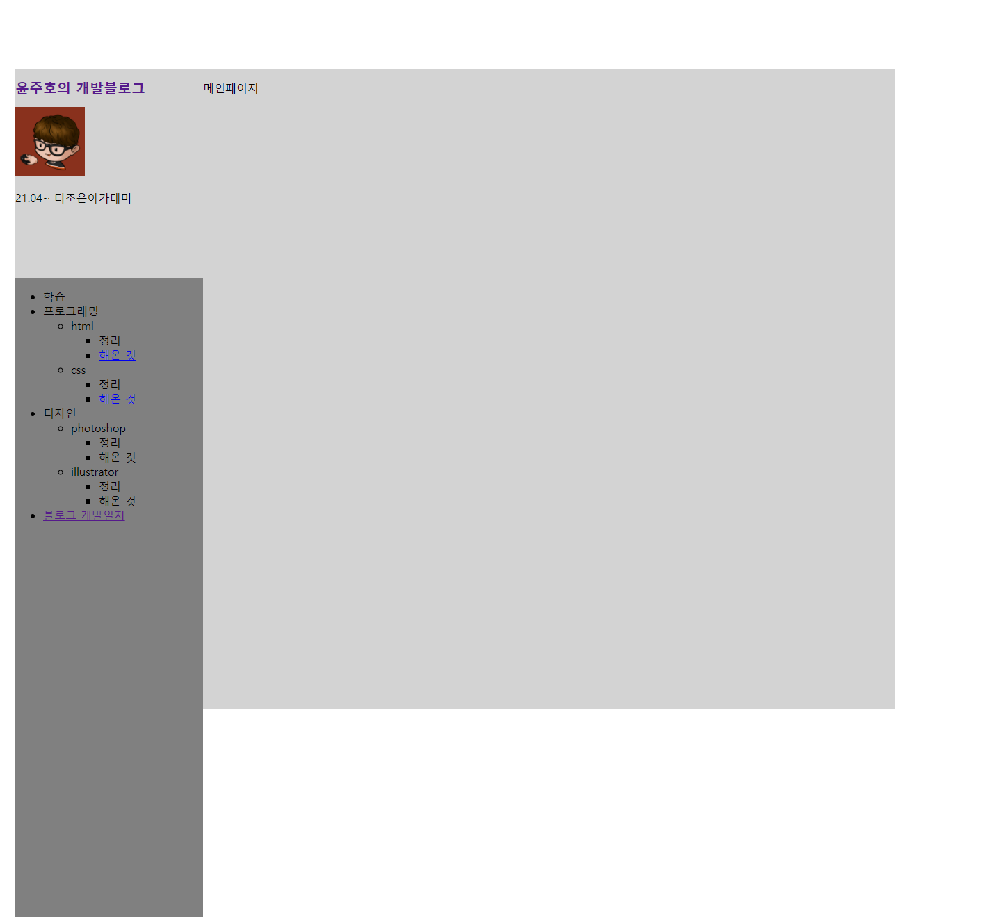
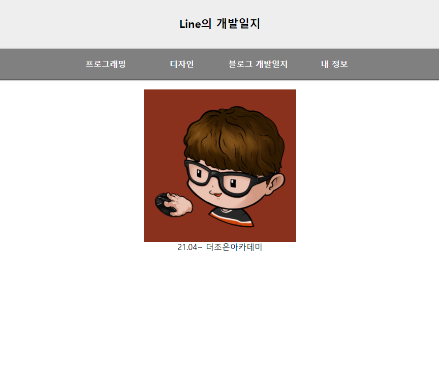

- 21년 5월 4일
- 프로필 및 목차, html 학습 목록 업로드

- 프로필 및 목차, html 학습 목록 업로드
- 21년 6월 4일
- 메뉴 목록 변경 및, 리뉴얼을 위한 학습 목록 삭제

- 메뉴 목록 변경 및, 리뉴얼을 위한 학습 목록 삭제
- 21년 6월 28일
- 티스토리 블로그를 따로 제작하기 위한 포트폴리오 사이트로 변경 및 뼈대 제작